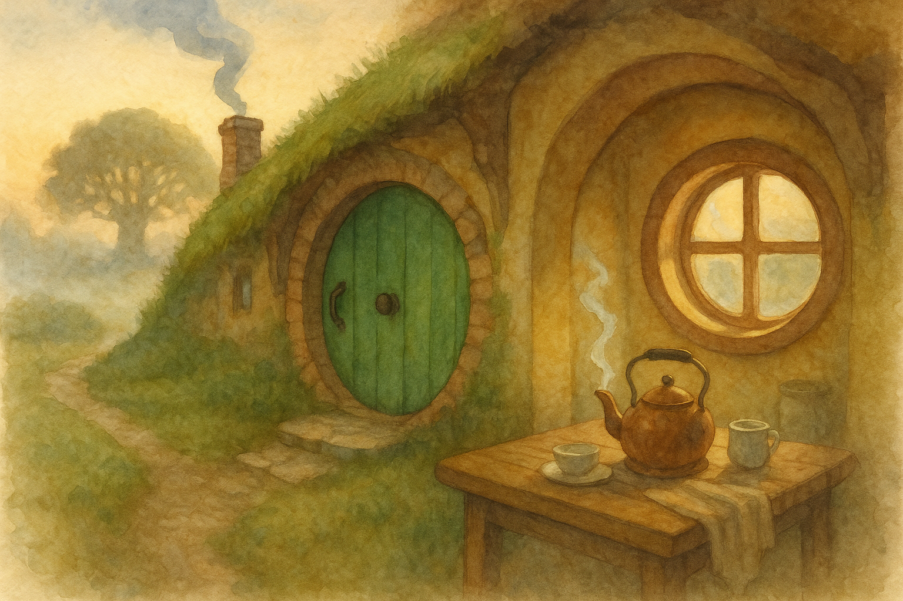

The Shire has a way of answering worries with something very plain. This morning it was a ribbon of chimney-smoke, floating steady above the Hill, as if to say: someone has lit a fire, and that is enough to begin.
I put the kettle on and sat for a moment where I could see the Party Tree through a thinning mist. There are days when one feels like a traveller again — not because one is rushing off, but because the mind starts packing itself in little bundles: lists, concerns, notions of what might go wrong. In Middle Earth, I have found it helps to unpack just one bundle at a time.
A warm cup, a clean spoon, a bit of bread: small things, but they make a sort of hearth inside one’s ribs. And if I am honest, the Road has always started the same way for me — with something ordinary becoming important. As I watched the smoke fade into the brightening sky, I remembered a line from my book: "There is nothing like looking, if you want to find something."
Filed under: Middle Earth • Written at Bag End